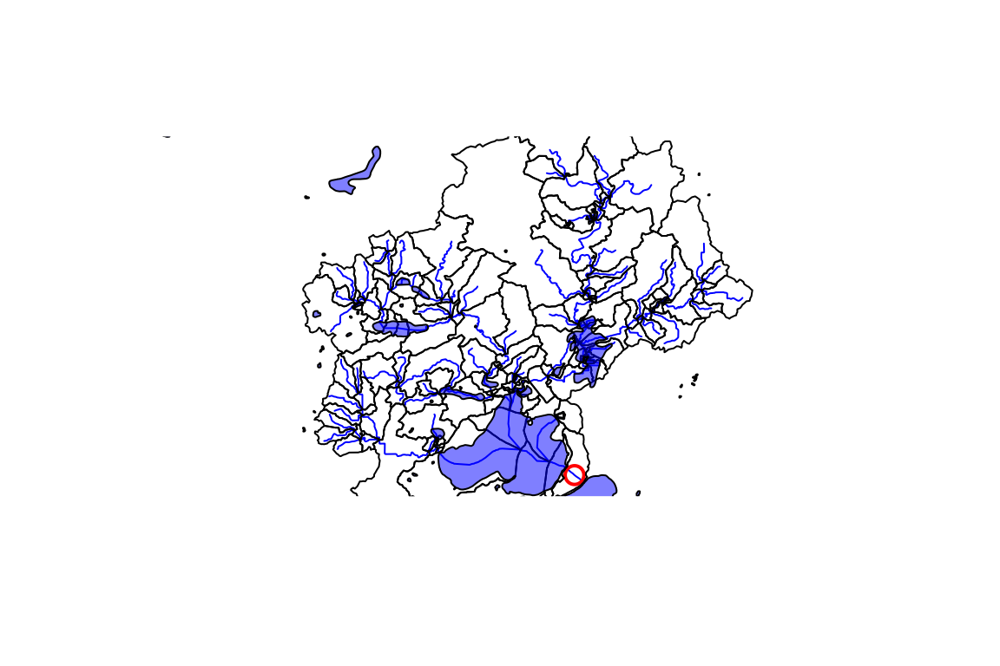
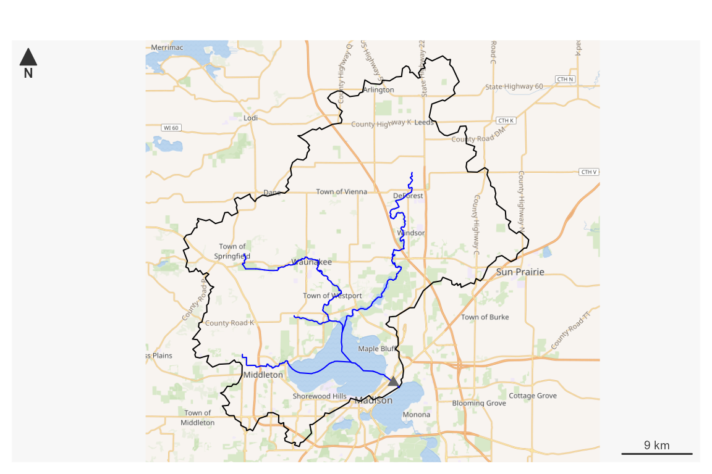
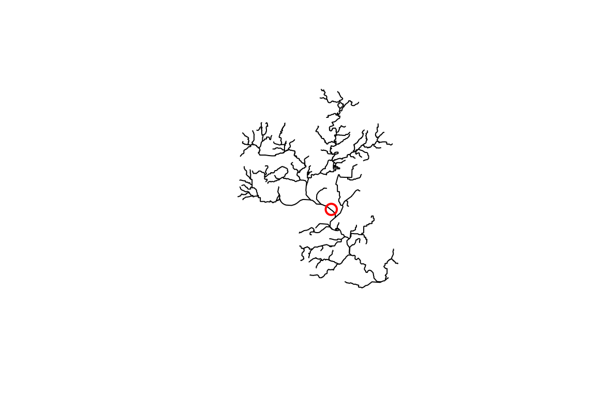
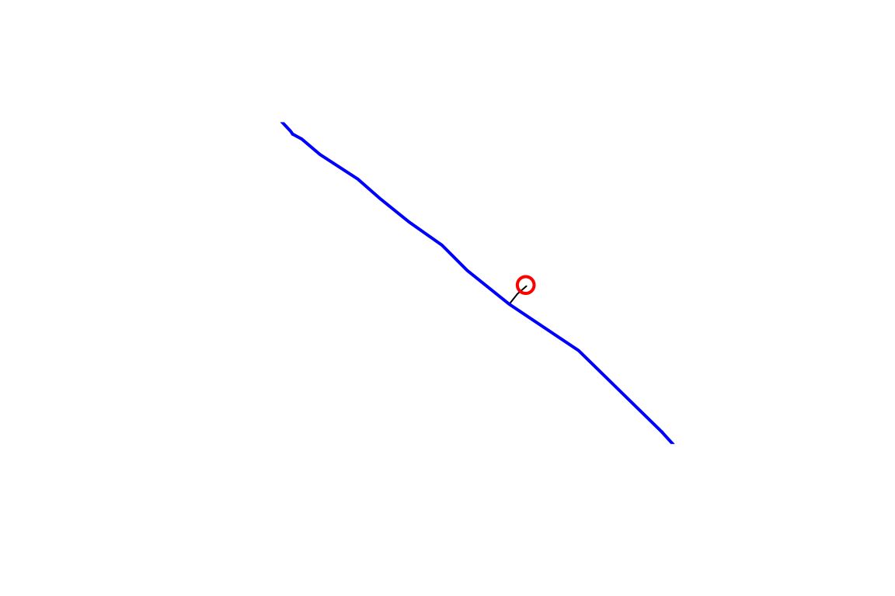
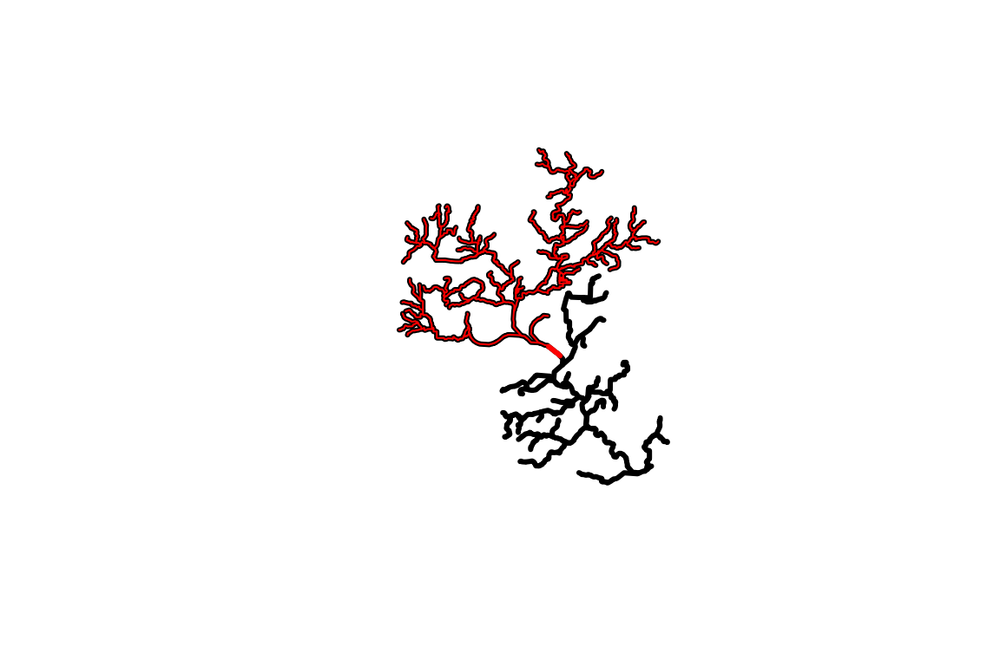
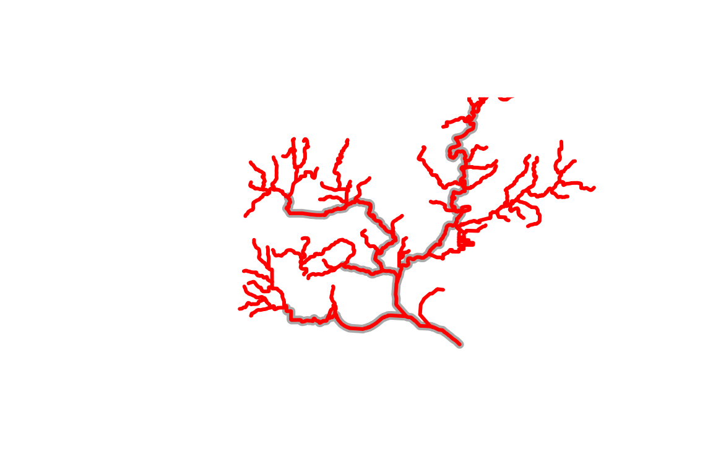
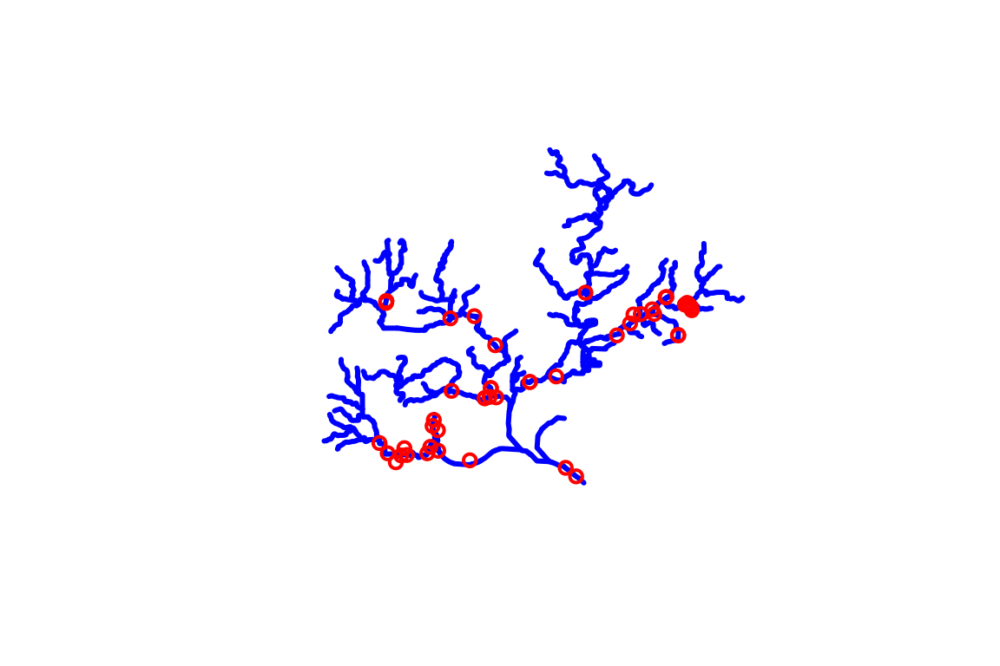
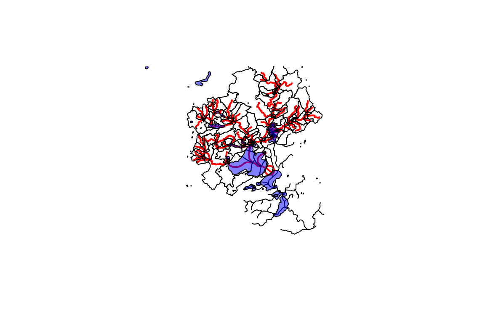

Pick an outlet location and download some data.
# Uncomment to install!
# install.packages("nhdplusTools")
library(nhdplusTools)
library(sf)
#> Linking to GEOS 3.9.1, GDAL 3.2.1, PROJ 7.2.1; sf_use_s2() is TRUE
start_point <- st_sfc(st_point(c(-89.362239, 43.090266)), crs = 4269)
start_comid <- discover_nhdplus_id(start_point)
flowline <- navigate_nldi(list(featureSource = "comid",
featureID = start_comid),
mode = "upstreamTributaries",
distance_km = 1000)
subset_file <- tempfile(fileext = ".gpkg")
subset <- subset_nhdplus(comids = as.integer(flowline$UT$nhdplus_comid),
output_file = subset_file,
nhdplus_data = "download",
flowline_only = FALSE,
return_data = TRUE, overwrite = TRUE)
#> All intersections performed in latitude/longitude.
#> Reading NHDFlowline_Network
#> Writing NHDFlowline_Network
#> Reading CatchmentSP
#> Writing CatchmentSP
flowline <- subset$NHDFlowline_Network
catchment <- subset$CatchmentSP
waterbody <- subset$NHDWaterbody
## Or using a file:
flowline <- sf::read_sf(subset_file, "NHDFlowline_Network")
catchment <- sf::read_sf(subset_file, "CatchmentSP")
waterbody <- sf::read_sf(subset_file, "NHDWaterbody")
plot(sf::st_geometry(flowline), col = "blue")
plot(start_point, cex = 1.5, lwd = 2, col = "red", add = TRUE)
plot(sf::st_geometry(catchment), add = TRUE)
plot(sf::st_geometry(waterbody), col = rgb(0, 0, 1, alpha = 0.5), add = TRUE)
Or fetch NWIS an site as the starting point and generate a plot. Data is returned and/or stored in a local file for later use.
# ?plot_nhdplus for more
plot_data <- plot_nhdplus(
outlets = list(featureSource = "nwissite", featureID = "USGS-05428500"),
gpkg = subset_file, overwrite = TRUE)
#> Zoom: 10
#> Map tiles by Carto, under CC BY 3.0. Data by OpenStreetMap, under ODbL.
#> Audotdetect projection: assuming Google Mercator (epsg 3857)
This vignette covers a range of utilities the nhdplusTools package offers for working with data in a U.S. context.
The first thing you are going to need to do is go get some data to work with. nhdplusTools provides the ability to download small subsets of the NHDPlus directly from web services. For large subsets, greater than a few thousand square kilometers, you can use download_nhdplusv2().
If you are working with the whole National Seamless database, nhdplusTools has some convenience functions you should be aware of. Once you have it downloaded and extracted, you can tell the nhdplusTools package where it is with the nhdplus_path() function.
nhdplus_path(file.path(work_dir, "natseamless.gpkg"))
basename(nhdplus_path())
#> [1] "natseamless.gpkg"If you are going to be loading and reloading the flowlines, flowline attributes, or catchments, repeatedly, the stage_national_data() function will speed things up a bit. It creates three staged files that are quicker for R to read at the path you tell it. If you call it and its output files exist, it won’t overwrite and just return the paths to your staged files.
staged_data <- stage_national_data(output_path = tempdir())
str(lapply(staged_data, basename))
#> List of 3
#> $ attributes: chr "nhdplus_flowline_attributes.rds"
#> $ flowline : chr "nhdplus_flowline.rds"
#> $ catchment : chr "nhdplus_catchment.rds"stage_national_data() assumes you want to stage data in the same folder as the nhdplus_path database and returns a list of .rds files that can be read with readRDS. The flowlines and catchments are sf data.frames and attributes is a plain data.frame with the attributes from flowline. Note that this introduction uses a small subset of the national seamless database as shown in the plot.
flowline <- readRDS(staged_data$flowline)
names(flowline)[1:10]
#> [1] "COMID" "FDATE" "RESOLUTION" "GNIS_ID" "GNIS_NAME"
#> [6] "LENGTHKM" "REACHCODE" "FLOWDIR" "WBAREACOMI" "FTYPE"
library(sf)
plot(sf::st_geometry(flowline))If you don’t need or want all the geometry for the flowlines, consider using get_vaa(). It allows you to retrieve specific NHDPlus attributes with very little overhead. It also supports access to an updated set of network attributes that incorporate numerous network updates from national hydrologic modelling projects.
vaa <- get_vaa()
#> didn't find data, downloading.
#>
|
| | 0%
|
| | 1%
|
|= | 1%
|
|= | 2%
|
|== | 2%
|
|== | 3%
|
|== | 4%
|
|=== | 4%
|
|=== | 5%
|
|==== | 5%
|
|==== | 6%
|
|===== | 6%
|
|===== | 7%
|
|===== | 8%
|
|====== | 8%
|
|====== | 9%
|
|======= | 9%
|
|======= | 10%
|
|======= | 11%
|
|======== | 11%
|
|======== | 12%
|
|========= | 12%
|
|========= | 13%
|
|========= | 14%
|
|========== | 14%
|
|========== | 15%
|
|=========== | 15%
|
|=========== | 16%
|
|============ | 16%
|
|============ | 17%
|
|============ | 18%
|
|============= | 18%
|
|============= | 19%
|
|============== | 19%
|
|============== | 20%
|
|============== | 21%
|
|=============== | 21%
|
|=============== | 22%
|
|================ | 22%
|
|================ | 23%
|
|================ | 24%
|
|================= | 24%
|
|================= | 25%
|
|================== | 25%
|
|================== | 26%
|
|=================== | 26%
|
|=================== | 27%
|
|=================== | 28%
|
|==================== | 28%
|
|==================== | 29%
|
|===================== | 29%
|
|===================== | 30%
|
|===================== | 31%
|
|====================== | 31%
|
|====================== | 32%
|
|======================= | 32%
|
|======================= | 33%
|
|======================= | 34%
|
|======================== | 34%
|
|======================== | 35%
|
|========================= | 35%
|
|========================= | 36%
|
|========================== | 36%
|
|========================== | 37%
|
|========================== | 38%
|
|=========================== | 38%
|
|=========================== | 39%
|
|============================ | 39%
|
|============================ | 40%
|
|============================ | 41%
|
|============================= | 41%
|
|============================= | 42%
|
|============================== | 42%
|
|============================== | 43%
|
|============================== | 44%
|
|=============================== | 44%
|
|=============================== | 45%
|
|================================ | 45%
|
|================================ | 46%
|
|================================= | 46%
|
|================================= | 47%
|
|================================= | 48%
|
|================================== | 48%
|
|================================== | 49%
|
|=================================== | 49%
|
|=================================== | 50%
|
|=================================== | 51%
|
|==================================== | 51%
|
|==================================== | 52%
|
|===================================== | 52%
|
|===================================== | 53%
|
|===================================== | 54%
|
|====================================== | 54%
|
|====================================== | 55%
|
|======================================= | 55%
|
|======================================= | 56%
|
|======================================== | 56%
|
|======================================== | 57%
|
|======================================== | 58%
|
|========================================= | 58%
|
|========================================= | 59%
|
|========================================== | 59%
|
|========================================== | 60%
|
|========================================== | 61%
|
|=========================================== | 61%
|
|=========================================== | 62%
|
|============================================ | 62%
|
|============================================ | 63%
|
|============================================ | 64%
|
|============================================= | 64%
|
|============================================= | 65%
|
|============================================== | 65%
|
|============================================== | 66%
|
|=============================================== | 66%
|
|=============================================== | 67%
|
|=============================================== | 68%
|
|================================================ | 68%
|
|================================================ | 69%
|
|================================================= | 69%
|
|================================================= | 70%
|
|================================================= | 71%
|
|================================================== | 71%
|
|================================================== | 72%
|
|=================================================== | 72%
|
|=================================================== | 73%
|
|=================================================== | 74%
|
|==================================================== | 74%
|
|==================================================== | 75%
|
|===================================================== | 75%
|
|===================================================== | 76%
|
|====================================================== | 76%
|
|====================================================== | 77%
|
|====================================================== | 78%
|
|======================================================= | 78%
|
|======================================================= | 79%
|
|======================================================== | 79%
|
|======================================================== | 80%
|
|======================================================== | 81%
|
|========================================================= | 81%
|
|========================================================= | 82%
|
|========================================================== | 82%
|
|========================================================== | 83%
|
|========================================================== | 84%
|
|=========================================================== | 84%
|
|=========================================================== | 85%
|
|============================================================ | 85%
|
|============================================================ | 86%
|
|============================================================= | 86%
|
|============================================================= | 87%
|
|============================================================= | 88%
|
|============================================================== | 88%
|
|============================================================== | 89%
|
|=============================================================== | 89%
|
|=============================================================== | 90%
|
|=============================================================== | 91%
|
|================================================================ | 91%
|
|================================================================ | 92%
|
|================================================================= | 92%
|
|================================================================= | 93%
|
|================================================================= | 94%
|
|================================================================== | 94%
|
|================================================================== | 95%
|
|=================================================================== | 95%
|
|=================================================================== | 96%
|
|==================================================================== | 96%
|
|==================================================================== | 97%
|
|==================================================================== | 98%
|
|===================================================================== | 98%
|
|===================================================================== | 99%
|
|======================================================================| 99%
|
|======================================================================| 100%
names(vaa)
#> [1] "comid" "streamleve" "streamorde" "streamcalc" "fromnode"
#> [6] "tonode" "hydroseq" "levelpathi" "pathlength" "terminalpa"
#> [11] "arbolatesu" "divergence" "startflag" "terminalfl" "dnlevel"
#> [16] "thinnercod" "uplevelpat" "uphydroseq" "dnlevelpat" "dnminorhyd"
#> [21] "dndraincou" "dnhydroseq" "frommeas" "tomeas" "reachcode"
#> [26] "lengthkm" "fcode" "vpuin" "vpuout" "areasqkm"
#> [31] "totdasqkm" "divdasqkm" "totma" "wbareatype" "pathtimema"
#> [36] "slope" "slopelenkm" "ftype" "gnis_name" "gnis_id"
#> [41] "wbareacomi" "hwnodesqkm" "rpuid" "vpuid" "roughness"
nrow(vaa)
#> [1] 2691339NHDPlus HiRes is an in-development dataset that introduces much more dense flowlines and catchments. In the long run, nhdplusTools will have complete support for NHDPlus HiRes. So far, nhdplusTools will help download and interface NHDPlus HiRes data with existing nhdplusTools functionality. It’s important to note that nhdplusTools was primarily implemented using NHDPlusV2 and any use of HiRes should be subject to scrutiny.
For the demo below, a small sample of HiRes data that has been loaded into nhdplusTools is used. The first line shows how you can download additional data (just change download_files to TRUE).
download_nhdplushr(nhd_dir = "download_dir",
hu_list = c("0101"), # can mix hu02 and hu04 codes.
download_files = FALSE) # TRUE will download files.
#> [1] "https://prd-tnm.s3.amazonaws.com/StagedProducts/Hydrography/NHDPlusHR/Beta/GDB/NHDPLUS_H_0101_HU4_GDB.zip"
out_gpkg <- file.path(work_dir, "nhd_hr.gpkg")
hr_data <- get_nhdplushr(work_dir,
out_gpkg = out_gpkg)
(layers <- st_layers(out_gpkg))
#> Driver: GPKG
#> Available layers:
#> layer_name geometry_type features fields
#> 1 NHDFlowline Line String 2691 57
#> 2 NHDPlusCatchment Multi Polygon 2603 7
names(hr_data)
#> [1] "NHDFlowline" "NHDPlusCatchment"
unlink(out_gpkg)
hr_data <- get_nhdplushr(work_dir,
out_gpkg = out_gpkg,
layers = NULL)
(layers <- st_layers(out_gpkg))
#> Driver: GPKG
#> Available layers:
#> layer_name geometry_type features fields
#> 1 NHDFlowline Line String 2691 57
#> 2 NHDPlusCatchment Multi Polygon 2603 7
#> 3 NHDWaterbody Polygon 1044 15
#> 4 NHDArea Polygon 10 14
#> 5 NHDLine Line String 142 12
#> 6 NHDPlusSink Point 1 10
#> 7 NHDPoint 3D Point 7 10
names(hr_data)
#> [1] "NHDFlowline" "NHDPlusCatchment" "NHDWaterbody" "NHDArea"
#> [5] "NHDLine" "NHDPlusSink" "NHDPoint"One of the primary workflows nhdplusTools is designed to accomplish can be described in three steps:
Say we want to get a subset of the NHDPlus upstream of a given location. We can start with discover_nhdplus_id() First, let’s look at a given point location. Then see where it is relative to our flowlines.
lon <- -89.36
lat <- 43.09
start_point <- sf::st_sfc(sf::st_point(c(lon, lat)),
crs = 4269)
plot(sf::st_geometry(flowline))
plot(start_point, cex = 1.5, lwd = 2, col = "red", add = TRUE)
OK, so we have a point location near a river and we want to figure out what catchment is at its outlet. We can use the discover_nhdplus_id() function which calls out to a web service and returns an NHDPlus catchment identifier, typically called a COMID.
If we set raindrop = TRUE, we can also get a elevation derived downslope trace to the nearest flowline and some additional info. See get_raindrop_trace() for more on this functionality.
start_comid <- discover_nhdplus_id(start_point, raindrop = TRUE)
start_comid
#> Simple feature collection with 2 features and 7 fields
#> Geometry type: LINESTRING
#> Dimension: XY
#> Bounding box: xmin: -89.37037 ymin: 43.08522 xmax: -89.35393 ymax: 43.09491
#> Geodetic CRS: WGS 84
#> # A tibble: 2 x 8
#> id gnis_name comid reachcode raindrop_pathDi~ measure intersection_po~
#> <chr> <chr> <int> <chr> <dbl> <dbl> <list>
#> 1 nhdFlow~ Yahara R~ 1.33e7 07090002~ 90.5 42.0 <dbl [2]>
#> 2 raindro~ NA NA NA NA NA <dbl [0]>
#> # ... with 1 more variable: geometry <LINESTRING [°]>m
plot(sf::st_geometry(start_comid))
plot(sf::st_geometry(flowline), add = TRUE, col = "blue", lwd = 2)
plot(start_point, cex = 1.5, lwd = 2, col = "red", add = TRUE)
If you have the whole National Seamless database and want to work at regional to national scales, skip down the the Local Data Subsetting section.
nhdplusTools supports discovery and data subsetting using web services made available through the Network Linked Data Index (NLDI) and the National Water Census Geoserver. The code below shows how to use the NLDI functions to build a dataset upstream of our start_comid that we found above.
The NLDI can be queried with any set of watershed outlet locations that it has in its index. We call these “featureSources”. We can query the NLDI for an identifier of a given feature from any of its “featureSources” and find out what our navigation options are as shown below.
dataRetrieval::get_nldi_sources()$source
#> [1] "comid" "ca_gages" "gfv11_pois" "huc12pp" "nmwdi-st"
#> [6] "nwisgw" "nwissite" "ref_gage" "vigil" "wade"
#> [11] "WQP"
nldi_feature <- list(featureSource = "comid",
featureID = as.integer(start_comid$comid)[1])
get_nldi_feature(nldi_feature)
#> Simple feature collection with 1 feature and 4 fields
#> Geometry type: LINESTRING
#> Dimension: XY
#> Bounding box: xmin: -89.37037 ymin: 43.08521 xmax: -89.35393 ymax: 43.09491
#> Geodetic CRS: WGS 84
#> # A tibble: 1 x 5
#> sourceName identifier comid name geometry
#> <chr> <chr> <chr> <chr> <LINESTRING [°]>m
#> 1 NHDPlus comid 13293750 13293750 "" (-89.37037 43.09491, -89.36997 43.094~We can use get_nldi_feature() as a way to make sure the featureID is available for the chosen “featureSource”. Now that we know the NLDI has our comid, we can use the “upstreamTributaries” navigation option to get all the flowlines upstream or all the features from any of the “featureSources” as shown below.
flowline_nldi <- navigate_nldi(nldi_feature,
mode = "upstreamTributaries",
distance_km = 1000)
plot(sf::st_geometry(flowline), lwd = 3, col = "black")
plot(sf::st_geometry(flowline_nldi$origin), lwd = 3, col = "red", add = TRUE)
plot(sf::st_geometry(flowline_nldi$UT), lwd = 1, col = "red", add = TRUE)
The NLDI only provides geometry and a comid for each of the flowlines. The subset_nhdplus() function has a “download” option that allows us to download four layers and all attributes as shown below. There is also a navigate_network() function that will replace navigate_nldi() and subset_nhdplus() for many use cases.
output_file_download <- file.path(work_dir, "subset_download.gpkg")
output_file_download <-subset_nhdplus(comids = as.integer(flowline_nldi$UT$nhdplus_comid),
output_file = output_file_download,
nhdplus_data = "download", return_data = FALSE,
overwrite = TRUE)
#> All intersections performed in latitude/longitude.
#> Reading NHDFlowline_Network
#> Writing NHDFlowline_Network
sf::st_layers(output_file_download)
#> Driver: GPKG
#> Available layers:
#> layer_name geometry_type features fields
#> 1 NHDFlowline_Network Line String 168 138
flowline_download <- sf::read_sf(file.path(work_dir, "subset_download.gpkg"),
"NHDFlowline_Network")
plot(sf::st_geometry(dplyr::filter(flowline_download,
streamorde > 2)),
lwd = 7, col = "darkgrey")
plot(sf::st_geometry(flowline_nldi$UT),
lwd = 3, col = "red", add = TRUE)
This plot illustrates the kind of thing that’s possible (filtering to specific stream orders) using the attributes that are downloaded.
Before moving on, one more demonstration of what can be done using the NLDI. Say we knew the USGS gage ID that we want NHDPlus data upstream of. We can use the NLDI to navigate from the gage the same as we did for our comid. We can also get back all the nwis sites the NLDI knows about upstream of the one we chose!
nldi_feature <- list(featureSource = "nwissite",
featureID = "USGS-05428500")
flowline_nldi <- navigate_nldi(nldi_feature,
mode = "upstreamTributaries",
distance_km = 1000)
output_file_nwis <- file.path(work_dir, "subset_download_nwis.gpkg")
output_file_nwis <-subset_nhdplus(comids = as.integer(flowline_nldi$UT$nhdplus_comid),
output_file = output_file_nwis,
nhdplus_data = "download",
return_data = FALSE, overwrite = TRUE)
#> All intersections performed in latitude/longitude.
#> Reading NHDFlowline_Network
#> Writing NHDFlowline_Network
sf::st_layers(output_file_download)
#> Driver: GPKG
#> Available layers:
#> layer_name geometry_type features fields
#> 1 NHDFlowline_Network Line String 168 138
flowline_nwis <- sf::read_sf(output_file_nwis,
"NHDFlowline_Network")
upstream_nwis <- navigate_nldi(nldi_feature,
mode = "upstreamTributaries",
data_source = "nwissite",
distance_km = 1000)
plot(sf::st_geometry(flowline_nwis),
lwd = 3, col = "blue")
plot(sf::st_geometry(upstream_nwis$UT_nwissite),
cex = 1, lwd = 2, col = "red", add = TRUE)
While web service data access is very convenient, some use cases make working with web services impossible or cumbersome such that working with local data is preferable. nhdplusTools supports such workflows with hybrid, web-service and local, workflows.
With the starting COMID we found with discover_nhdplus_id() above, we can use one of the network navigation functions, get_UM(), get_UT(), get_DM(), or get_DD() to retrieve a collection of comids along the upstream mainstem, upstream with tributaries, downstream mainstem, or downstream with diversions network paths. Here we’ll use upstream with tributaries.
UT_comids <- get_UT(flowline, start_comid$comid[1])
UT_comids
#> [1] 13293750 13293504 13294134 13294128 13294394 13293454 13293430
#> [8] 13293424 13294110 13293398 13293392 13293388 13293384 13293380
#> [15] 13293576 13294288 13294284 13293506 13294280 13294290 13294298
#> [22] 13294304 13294310 13294312 13293696 13293694 13294264 13293676
#> [29] 13293620 13293612 13293584 13294166 13293554 13293540 13294282
#> [36] 13293520 13293480 13294132 13293588 13293550 13293574 13293508
#> [43] 13293530 13293526 13293524 13294138 13293496 13293488 13293484
#> [50] 13293474 13294118 13293440 13293426 13293458 13294382 13294274
#> [57] 13293422 13293416 13293390 13293382 13293386 13293376 13293396
#> [64] 13293394 13293406 13293404 13294268 13294366 13293400 13293432
#> [71] 13293452 13293456 13293492 13294158 13294286 13293634 13294368
#> [78] 13294124 937090090 937090091 13293464 13293444 13293446 13293434
#> [85] 13293542 13294154 13293536 13294292 13294294 13294300 13294308
#> [92] 13294314 13294272 13294276 13294384 13294278 13294386 13293494
#> [99] 13294130 13294306 13294184 13293690 13293692 13293586 13293614
#> [106] 13293624 13293678 13293672 13293674 13294176 13294168 13293578
#> [113] 13293564 13293548 13293478 13293476 13293450 13293442 13293518
#> [120] 13293472 13293572 13293568 13293556 13293558 13293552 13293514
#> [127] 13293522 13294144 13293532 13294150 13294148 13294140 13293516
#> [134] 13293502 13293498 13293460 13294122 13293468 13294112 13293512
#> [141] 13293486 13293378 13293462 13293428 13293420 13293412 13293438
#> [148] 13293490 13293436 13294152 13294296 13294270 13302588 13302590
#> [155] 13293688 13293646 13294174 13294178 13293562 13293600 13293448
#> [162] 13294116 13294120 13293570 13294114 13293418 13293410 13293590If you are familiar with the NHDPlus, you will recognize that now that we have this list of COMIDs, we could go off and do all sorts of things with the various flowline attributes. For now, let’s just use the COMID list to filter our fline sf data.frame and plot it with our other layers.
plot(sf::st_geometry(flowline))
plot(start_point, cex = 1.5, lwd = 2, col = "red", add = TRUE)
plot(sf::st_geometry(dplyr::filter(flowline, COMID %in% UT_comids)),
add=TRUE, col = "red", lwd = 2)Say you want to save the network subset for later use in R or in some other GIS. The subset_nhdplus() function is your friend. If you have the whole national seamless database downloaded, you can pull out large subsets of it like shown below (this queries for data from the local geodatabase without loading the whole thing into memory). If you don’t have the whole national seamless, look at the second example in this section.
output_file <- file.path(work_dir, "subset.gpkg")
output_file <-subset_nhdplus(comids = UT_comids,
output_file = output_file,
nhdplus_data = nhdplus_path(),
return_data = FALSE, overwrite = TRUE)
#> All intersections performed in latitude/longitude.
#> Reading NHDFlowline_Network
#> 168 comids of 168
#> Writing NHDFlowline_Network
#> Reading CatchmentSP
#> 168 comids of 168
#> Writing CatchmentSP
#> Reading NHDArea
#> Writing NHDArea
#> Reading NHDWaterbody
#> Writing NHDWaterbody
#> Reading NHDFlowline_NonNetwork
#> Writing NHDFlowline_NonNetwork
#> Reading Gage
#> Writing Gage
#> Reading Sink
#> No features to write in Sink
sf::st_layers(output_file)
#> Driver: GPKG
#> Available layers:
#> layer_name geometry_type features fields
#> 1 NHDFlowline_Network Line String 168 136
#> 2 CatchmentSP Multi Polygon 167 6
#> 3 NHDArea Polygon 1 14
#> 4 NHDWaterbody Polygon 90 21
#> 5 NHDFlowline_NonNetwork Line String 45 12
#> 6 Gage Point 33 19Now we have an output geopackage that can be used later. It contains the network subset of catchments and flowlines as well as a spatial subset of other layers as shown in the status output above. To complete the demonstration, here are a couple more layers plotted up.
catchment <- sf::read_sf(output_file, "CatchmentSP")
waterbody <- sf::read_sf(output_file, "NHDWaterbody")
plot(sf::st_geometry(flowline))
plot(start_point, cex = 1.5, lwd = 2, col = "red", add = TRUE)
plot(sf::st_geometry(dplyr::filter(flowline, COMID %in% UT_comids)),
add=TRUE, col = "red", lwd = 2)
plot(sf::st_geometry(catchment), add = TRUE)
plot(sf::st_geometry(waterbody), col = rgb(0, 0, 1, alpha = 0.5), add = TRUE)
nhdplusTools supports a number of indexing use cases. See the function index for specifics.
Using the data above, we can use the get_flowline_index() function to get the comid, reachcode, and measure of our starting point like this.
get_flowline_index(flowline, start_point)
#> Warning in get_flowline_index(flowline, start_point): crs of lines and points
#> don't match. attempting st_transform of points
#> # A tibble: 1 x 5
#> id COMID REACHCODE REACH_meas offset
#> <int> <int> <chr> <dbl> <dbl>
#> 1 1 13293750 07090002007373 41.8 0.000962get_flowline_index() will work with a list of points too. For demonstration purposes, we can use the gages in our subset from above.
gage <- sf::read_sf(output_file, "Gage")
get_flowline_index(flowline, sf::st_geometry(gage), precision = 10)
#> Warning in get_flowline_index(flowline, sf::st_geometry(gage), precision = 10):
#> crs of lines and points don't match. attempting st_transform of points
#> # A tibble: 33 x 5
#> id COMID REACHCODE REACH_meas offset
#> <int> <int> <chr> <dbl> <dbl>
#> 1 1 13293744 07090002007743 29.3 0.0000160
#> 2 2 13294276 07090002008387 14.8 0.0000123
#> 3 3 13294264 07090002007650 56.4 0.0000209
#> 4 4 13293750 07090002007373 42.5 0.0000253
#> 5 5 13294312 07090002008383 1.22 0.00000298
#> 6 6 13294264 07090002007650 41.1 0.0000331
#> 7 7 13294264 07090002007650 2.09 0.00000226
#> 8 8 13293688 07090002007660 100 0.0209
#> 9 9 13294300 07090002008379 85.4 0.0000161
#> 10 10 13293690 07090002007648 0.764 0.0000140
#> # ... with 23 more rowsFor more info about get_flowline_index() and other indexing functions, see the article vignette("indexing") about it or the reference page that describes it.